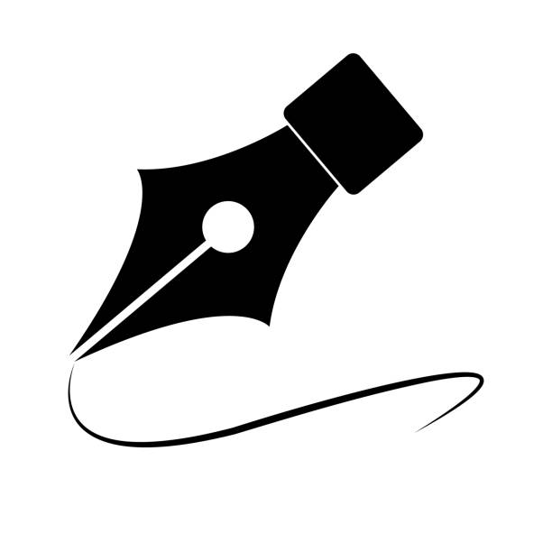

HTML (HyperText Markup Language): is the standard language for creating web pages. It structures content using elements like headings, paragraphs, and links. HTML defines the layout of text, images, and other elements on a page. It works with CSS and JavaScript to build interactive websites.
css4
CSS (Cascading Style Sheets): controls the visual appearance of HTML content. It styles text, colors, layouts, and spacing on web pages. CSS allows responsive design for different screen sizes. It separates content (HTML) from presentation (design).
Video editing
Video Editing: involves cutting, merging, and arranging video clips. It adds effects, music, transitions, and text to improve quality. Used to create engaging content for social media, TV, and films. Tools include Adobe Premiere Pro, CapCut, and DaVinci Resolve.

Graphics design
Graphics Designs: creates visual content to communicate messages. It involves the use of typography, colors, images, and layout. Designers use tools like Photoshop, Illustrator, and Canva. It's used for branding, marketing, web design, and more.
.png)